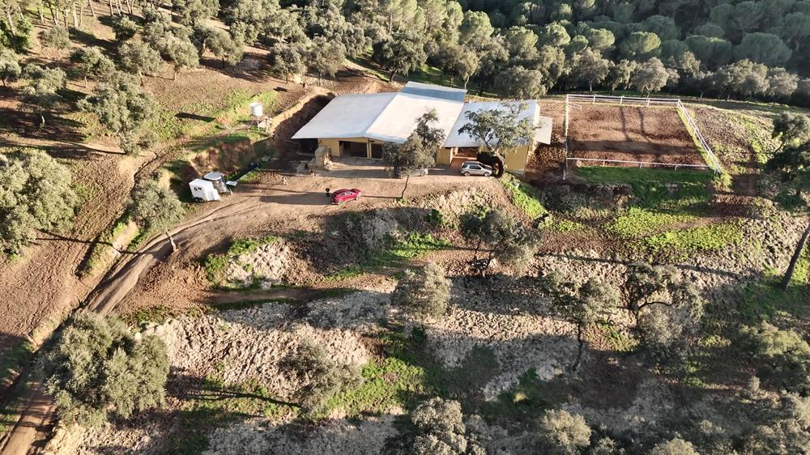
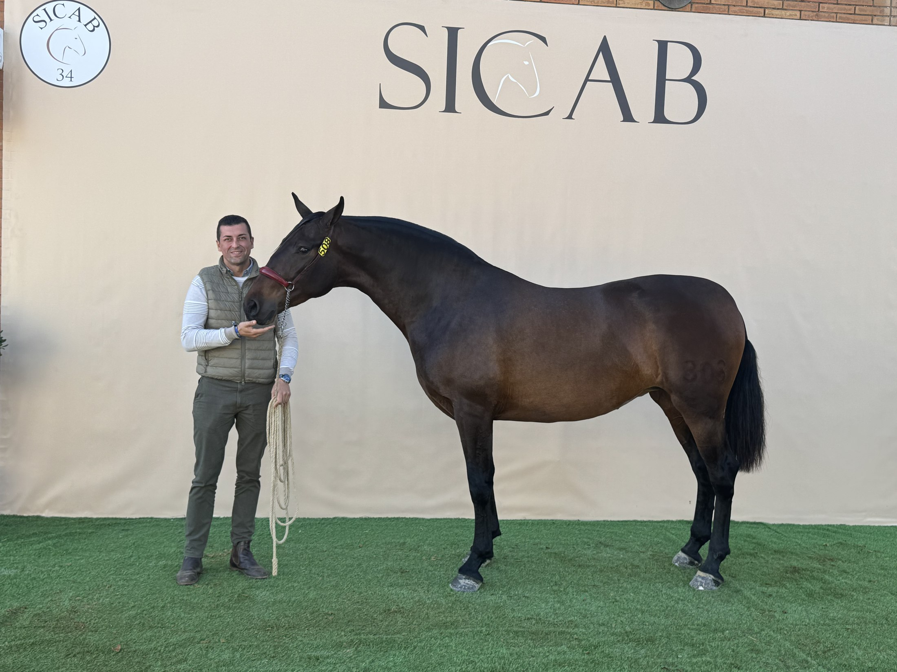
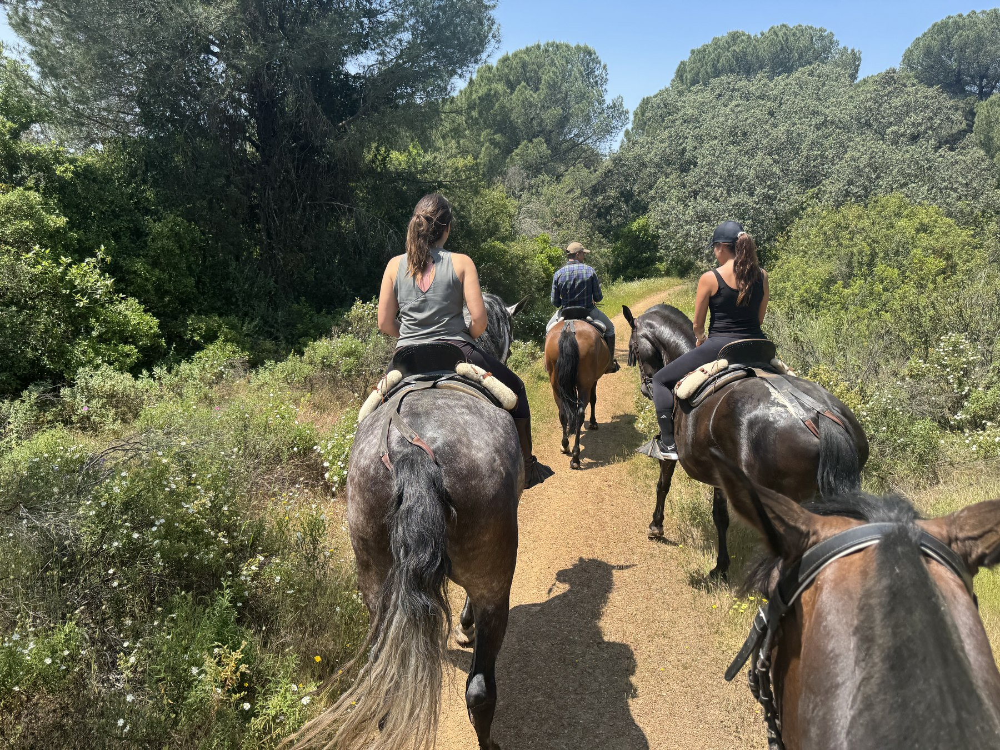
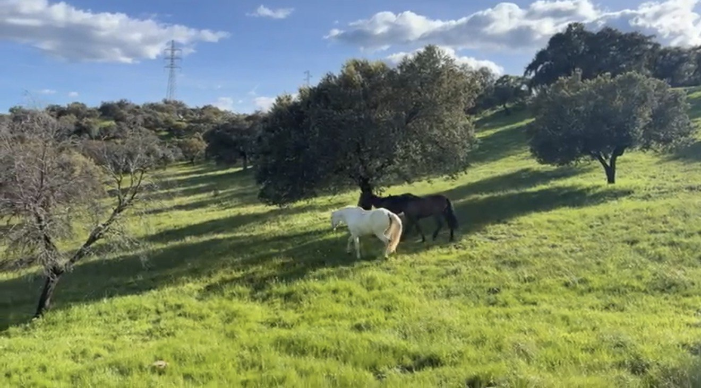

Cría de caballos de Pura Raza Española en la sierra de Córdoba.
Somos una pequeña ganadería de Pura Raza Española en la sierra de Córdoba. Empezamos con un semental y dos yeguas, y cada año nacen aquí nuevos potros.
Conocer nuestra historia →
Cada año que pasa, la yeguada es un poco más nuestra.

Foto: Picazo audiovisualSubcampeona en FIECVAL 2026 y campeona del mundo en la cobra de cinco de SICAB 2025. Antes había ganado en Equus Socuéllamos y Equus Villamanta compitiendo con nuestro nombre.
Y este año ha sido madre de Saeta, nacida aquí.
Ver su palmarés completo →
Yeguada Tres Tréboles nace con la ilusión de criar y disfrutar del Pura Raza Española, cuidando cada ejemplar y construyendo nuestro proyecto paso a paso.
Todos nuestros ejemplares están inscritos en el Libro Genealógico del caballo de Pura Raza Española.
Salir a caballo por los caminos de la sierra, entre encinas y con la sierra de Córdoba delante. Rutas guiadas para quien quiera conocer este entorno desde el mejor sitio posible.
Ver las rutas →

Cuidamos el caballo de otros como cuidamos los nuestros: en nuestras instalaciones del picadero, o en semilibertad en nuestra finca de Villaharta, en campo abierto y en manada.
Ver el pupilaje →Si te interesa alguno de nuestros caballos, quieres cubrir tu yegua con uno de nuestros sementales o te apetece salir de ruta, escríbenos sin compromiso.